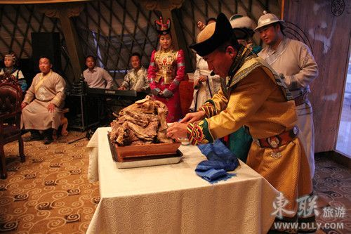
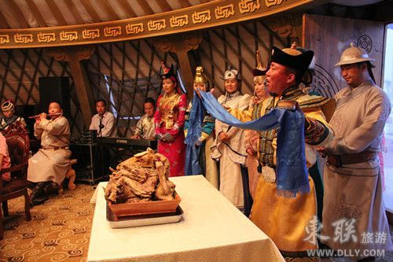

全羊背祝颂
蒙古人摆羊背子，只在隆重的场合进行，像接待贵宾、婚丧嫁娶、重大节日等。由于羊背子的用途不同，故挑选的羊只也不尽相同。宴席用的羊背子，选用的是肥尾大羯羊；供品羊背子，像祭敖包、祭神佛，选用的是当年的羊羔肉；礼品羊背子，选用的肥瘦、重量适中的羊。
蒙古人食用羊背子，比较讲究，异常隆重。当身着民族服装的蒙古族姑娘，满面春风地用双手端着长条形红漆托盘，放到主宾或长辈的餐桌上后，人们就会发现盘中摆放的羊背子是有一定格式的四腿“卧”在四个角里，羊背放在上面，羊头和颈骨放 在羊背上，羊头朝着主宾。接着，主人便端着盛有鲜奶的银碗，向客人敬献洁白的鲜奶，以表示他们用最圣洁、最吉祥的食品和蒙古族最高礼节，欢迎客人光临。客人们依次接过银碗，需用右手无名指到银碗中稍蘸一点鲜奶，庄重地向天弹一次，向地弹 一次，最后自已再象征性地品尝一下。表达了对天、地、神灵及主人的尊崇之情后， 善于言辞的祝颂人，便用浑厚激昂的蒙古语调，吟唱着鄂尔多斯古老的、敬献全羊的祝词：
尊敬的客人在上，
请允许我把肥嫩的整羊奉献；
它那宽阔的脊背，
就像广袤的宇宙。
它那肥大的四肢，
就像四大部洲。
它那高昂的头颅，
就像森布尔山（须弥山）头。
它那挺拔的长骨，
就像山上的檀香树。
把那首席的全羊，
摆放在亲朋贵客正中。
把那醇香的美酒，
斟满闪光的杯中。
有禄有福的客人们，请把它享用。
祝词完毕后，品尝一下，然后主宾把木盘调转，使羊头面向主人。
主人从身上抽出精致的蒙古刀，在全羊四周割少许，放到小杯中，并向天泼洒，以敬上天和大地。然后把全羊肉卸成50块。码到盘里，上面放上羊头，调转木盘，把蒙古刀刀柄递到主宾手里，两手平举，掌心向上，亲热地说：“请客人们用膳。”这时，主宾就按照当地的习惯，把羊头拿下来，再把全羊荐骨部两侧各切下三条肉进行交换，然后大家才一起用餐。
当三弦、四胡、扬琴、笛子、古筝等乐器奏起悠扬动听的酒歌乐曲时，容貌俊美的蒙古族青年男女，便随着乐曲声给大家唱歌敬酒：
金杯里斟满了醇浓的美酒，赛啦尔白咚赛， 高举起献给尊贵的朋友，赛啦尔白咚赛。 银杯里斟满了甘甜的美酒，赛啦尔白咚赛，高举着敬给四方的亲友，赛啦尔白咚赛。
三巡美酒喝完，人们的情绪就像烈火一样点燃起来。歌声此起彼伏，既有姑娘们美妙柔和的音色，又有老年人怀古的吟唱。动人的歌声把人们的思绪带到了绿遍四野的草原，草原上雄鹰展翅，百灵鸟鸣叫，鲜花烂漫，欢快的马群、游荡的羊群寻觅其间。这种活动往往要通宵达旦，直到月落星稀。
最后，人们再吃一些霍零饭（米和肉放在一起煮，放上食盐的饭）或全羊汤煮面 条，羊背子宴方告结束。到鄂尔多斯草原旅游，如果没有吃过羊背子，那将是人 们的终身遗憾。